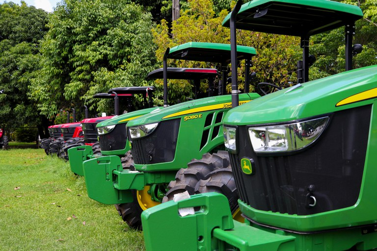
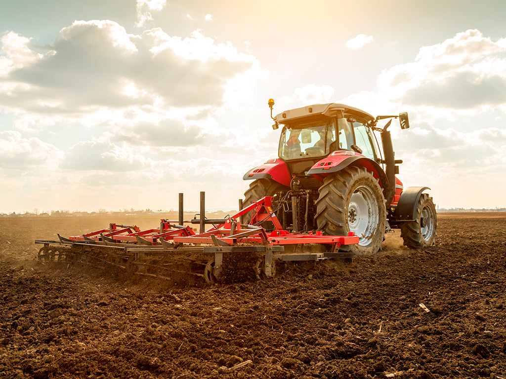
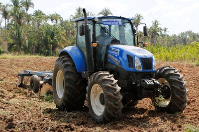
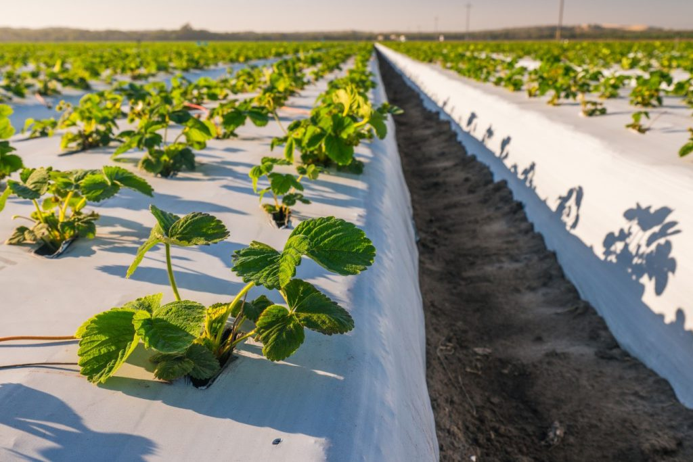

Tópicos Essenciais sobre a Importância do Suporte Técnico:
•Aumento da Produtividade e Qualidade:
Com a orientação de agrônomos, técnicos agrícolas e outros especialistas, os agricultores familiares
podem adotar técnicas de manejo mais eficientes, selecionar as melhores variedades de culturas e
criar
animais, e implementar sistemas de irrigação adequados. Isso leva a um aumento significativo na
quantidade e na qualidade dos produtos colhidos ou criados, resultando em maior rentabilidade.
•Sustentabilidade Ambiental:
O suporte técnico promove práticas agrícolas sustentáveis, como o uso consciente de fertilizantes e
defensivos, a rotação de culturas, o manejo integrado de pragas e doenças, e a conservação do solo e
da
água. Isso não só protege o meio ambiente, mas também garante a longevidade da terra para as futuras
gerações.
•Redução de Perdas e Riscos:
Com conhecimento sobre previsão do tempo, identificação precoce de pragas e doenças, e técnicas de
armazenamento adequadas, os produtores podem minimizar perdas na lavoura e no pós-colheita. O
suporte
técnico também os ajuda a entender e gerenciar riscos climáticos e de mercado.
•Acesso a Novas Tecnologias e Inovação:
O campo está em constante evolução. O suporte técnico atua como uma ponte entre os agricultores
familiares e as inovações em maquinário, biotecnologia, softwares de gestão e plataformas de
comercialização. Isso permite que se modernizem e se tornem mais competitivos.



•Gestão Financeira e Acesso a Crédito:
Muitos agricultores familiares enfrentam desafios na gestão de suas finanças. O suporte técnico pode
auxiliar na elaboração de planos de negócios, no controle de custos, na análise de viabilidade de
projetos e na busca por linhas de crédito e financiamentos específicos para o setor, fortalecendo a
sustentabilidade econômica da propriedade.
•Melhora na Comercialização e Acesso a Mercados:
Com a orientação técnica, os produtores podem entender as demandas do mercado, melhorar a
apresentação de
seus produtos, acessar novos canais de venda (como feiras, programas governamentais e vendas
diretas) e
até mesmo desenvolver agroindústrias familiares, agregando valor à sua produção.
•Fortalecimento Social e Organização:
O suporte técnico muitas vezes incentiva a formação de associações e cooperativas, promovendo a troca
de
experiências, a compra conjunta de insumos e a venda coletiva da produção. Isso fortalece os laços
comunitários e o poder de negociação dos agricultores familiares.
•Resiliência e Adaptação às Mudanças Climáticas:
Com a crescente imprevisibilidade climática, o suporte técnico é vital para que os agricultores
familiares possam adaptar suas culturas e métodos de manejo a novas realidades, como períodos de
seca
mais longos ou chuvas intensas. Isso inclui a escolha de variedades mais resistentes e a
implementação
de sistemas de captação de água.
